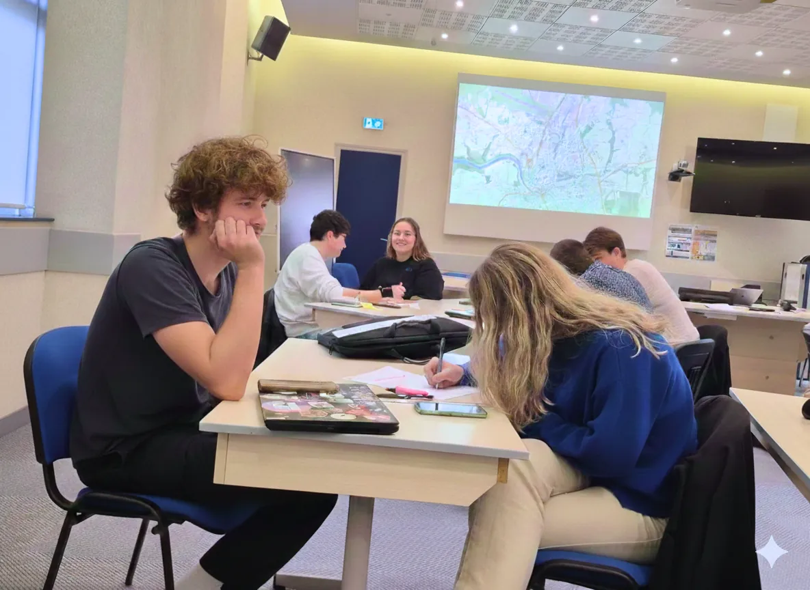
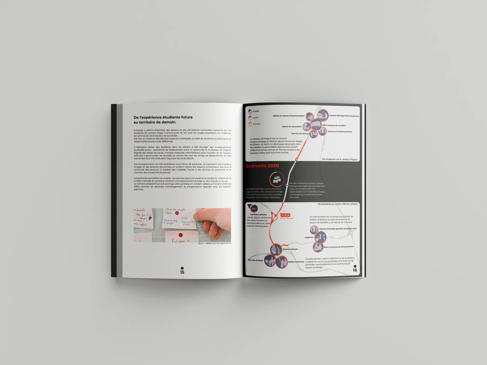

Projet 052025
L’étude visait à consulter les étudiants pour co-construire le nouveau campus selon leurs besoins, mais aussi à réinventer les mobilités et les loisirs lors du transfert de l’ENSSAT hors de son site historique en centre-ville.
Étude àLannion
Comment transformer la relocalisation de l’ENSSAT, désavantageuse pour Lannion-Trégor, en opportunité de design territorial ?
Restitution
Étude de l’expérience étudiante à Lannion Trégor Communauté.
Ateliers, enquête de terrain et analyse qualitative, restitués dans un document de synthèse qui projette l’expérience étudiante future sur le territoire.

